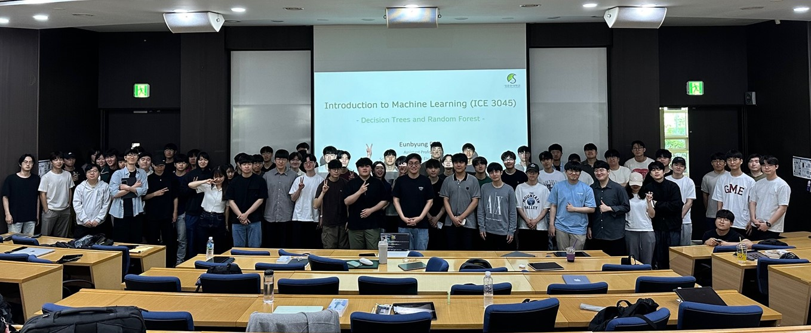

- AIM 5064: Special Topics in Visual Computing, Sungkyunkwan University, Fall 2024
- ICE 3045: Introduction to Machine Learning, Sungkyunkwan University, Fall 2024
- ICE 3051: Autonomoous Driving Capston Design, Sungkyunkwan University, Fall 2024
- ICE 3045: Introduction to Machine Learning, Sungkyunkwan University, Spring 2024

- ECE 5984: Foundation of Machine Learning, Sungkyunkwan University, Spring 2024
- ICE 3045: Introduction to Machine Learning, Sungkyunkwan University, Fall 2023
- ICE 3050: Cornerstone Design: Advanced Machine Learning, Sungkyunkwan University, Fall 2023
- ICE 3051: Autonomoous Driving Capston Design, Sungkyunkwan University, Spring 2023
- ECE 5984: Foundation of Machine Learning, Sungkyunkwan University, Spring 2023
- ICE 3045: Introduction to Machine Learning, Sungkyunkwan University, Fall 2022
- ICE 3050: Cornerstone Design: Advanced Machine Learning, Sungkyunkwan University, Fall 2022
- DASF 004: Basis and Practice in Programming, Sungkyunkwan University, Fall 2022
- AIM 5004: Deep Neural Networks, Sungkyunkwan University, Spring 2022
- ECE 5984: Foundation of Machine Learning, Sungkyunkwan University, Spring 2022
- ICE 3045: Introduction to Machine Learning, Sungkyunkwan University, Fall 2021
- ICE 3050: Cornerstone Design: Advanced Machine Learning, Sungkyunkwan University, Fall 2021